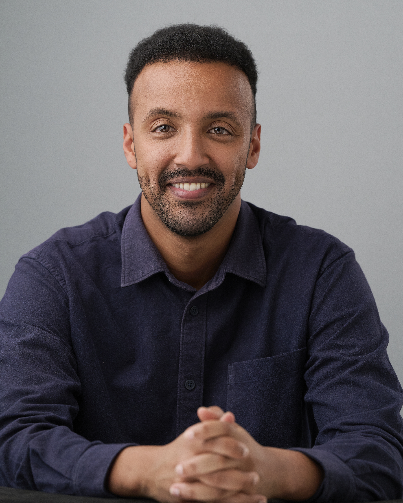

01
GROWTH · B2C · NAB
Expanded who could say “yes” to the product.
Used data to identify an eligibility constraint, aligned Risk, Legal and senior leadership around a staged expansion roadmap, then shipped the change.
2,000+opens in week one
PRODUCT / STRATEGY / SYSTEMS
I’m Menas Antachew, a Melbourne-based product leader. I build products, operating systems and teams that make hard problems easier to move — with evidence, empathy and a bias toward shipping.
YEARS IN PRODUCT
ACROSS GROWTH, PLATFORMS
& TRANSFORMATION
SELECTED SIGNALS
GROWTH · B2C · NAB
Used data to identify an eligibility constraint, aligned Risk, Legal and senior leadership around a staged expansion roadmap, then shipped the change.
EXPERIMENTATION · ACQUISITION
Owned the consumer deposit origination journey end-to-end. Worked across design, engineering, risk and legal, using segment-specific entry points and experimentation to reduce drop-off.
PLATFORM · TRANSFORMATION
Led migration from legacy origination and broker commission infrastructure toward target-state architecture while protecting compliance, continuity and future delivery velocity.
SYSTEMS · AI · ACCELERER
Built a live portfolio management system in Asana with risk logic and automation, created an executive “postcard” reporting cadence, and authored the case for an AI & Agentic Workforce Product Owner function.
BUILDING WITH AI · UNDERLAP
Underlap is my ongoing product build: a marketplace for local soccer players, coaches and clubs looking for their next opportunity — or the next piece of talent their team needs.
I’m using the project as a live product laboratory: moving from problem framing and marketplace mechanics into prototyping, AI-assisted development and continuous iteration. It’s a way to stay close to the craft — not just defining what should be built, but getting hands-on with how quickly an idea can become something testable.
The goal: make opportunity and talent easier to discover across grassroots football, where recruitment still often depends on fragmented networks and word of mouth.
PRODUCT OPERATING SYSTEM
Before adding, locate what is actually limiting the outcome: eligibility, friction, architecture, process or understanding.
Turn opinions into hypotheses, define the signal, then learn cheaply before committing heavily.
A customer journey sits inside risk, operations, technology and economics. Good product work improves the whole system.
The best update is not the longest. Give people the context, decision and next move they need.
THE THROUGH-LINE
BSc, Honours and MSc Biotechnology. Evidence first became a habit before product was a job title.
Direct consumer banking. Learned where friction actually hides by seeing customers encounter it.
Product Analyst → Product Owner → Senior Product Owner, spanning home lending, broker tooling and consumer deposits.
Program Analyst Lead at Accelerer: portfolio systems, executive reporting, operating-model work and agentic AI.
OUTSIDE THE ROADMAP
I coach football alongside my product work — currently assisting with Melbourne Srbija’s U20/U23 setup. Coaching gives me another environment to practise the same things I value in product: reading systems, communicating simply, adapting quickly and helping a group perform together.
THE SIDELINE / THE SQUAD / THE SYSTEM
Observe.
LOOKING FOR A PRODUCT PERSON WHO CAN HANDLE THE MESSY MIDDLE?